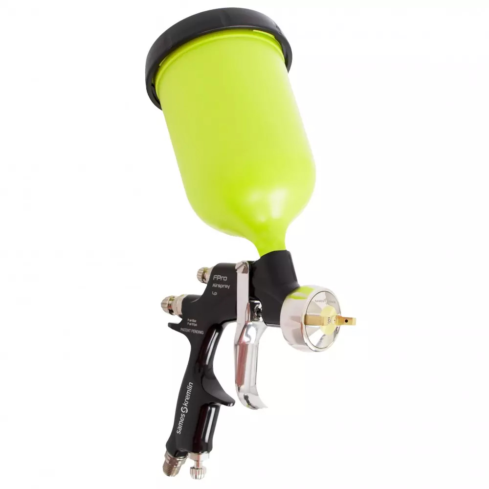
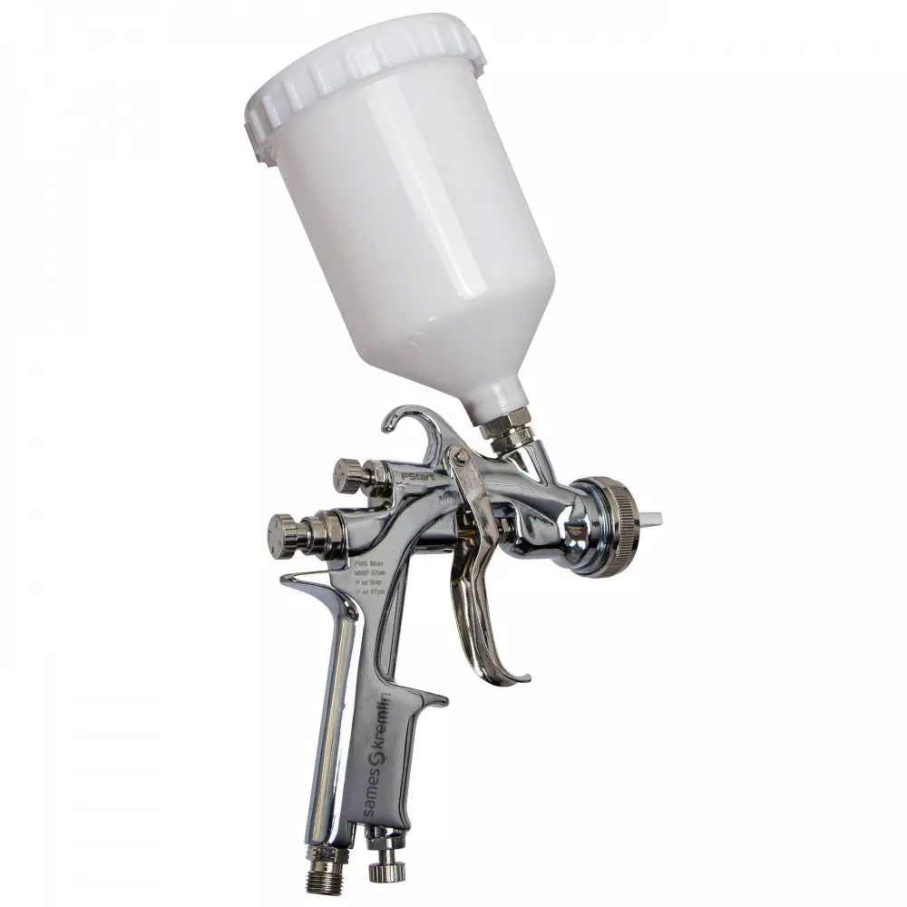
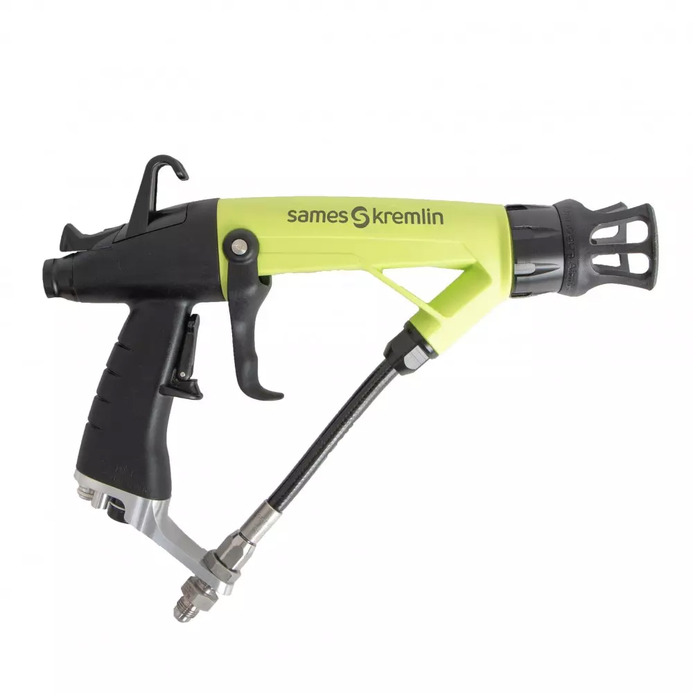
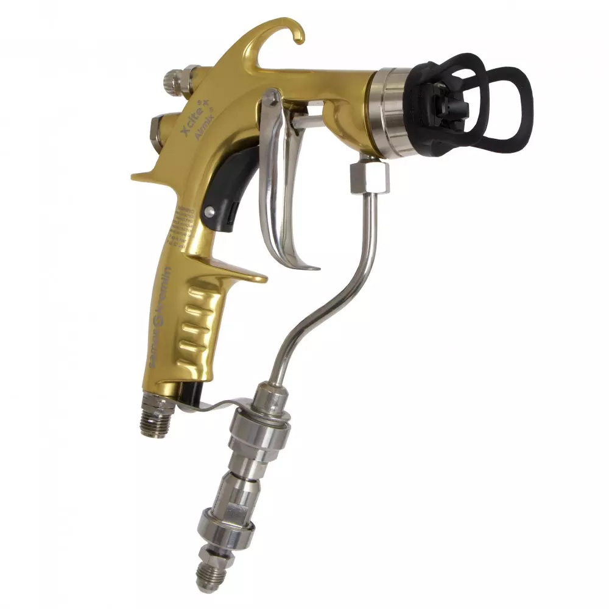

SAMES · ОКРАСОЧНОЕ ОБОРУДОВАНИЕ
FPro G
Ручной пневматический распылитель с верхним бачкомРаспылитель с верхним бачком для материалов с низкой вязкостью.
Подробнее о модели →Оборудование для промышленных окрасочных процессов. Описания перенесены с сайта NOVATEK и отредактированы для удобства чтения.

Распылитель с верхним бачком для материалов с низкой вязкостью.
Подробнее о модели →
Универсальный распылитель базового уровня, простой в эксплуатации и обслуживании.
Подробнее о модели →
Для нанесения органоразбавляемых материалов.
Подробнее о модели →
Ручной распылитель с технологией Airmix.
Подробнее о модели →